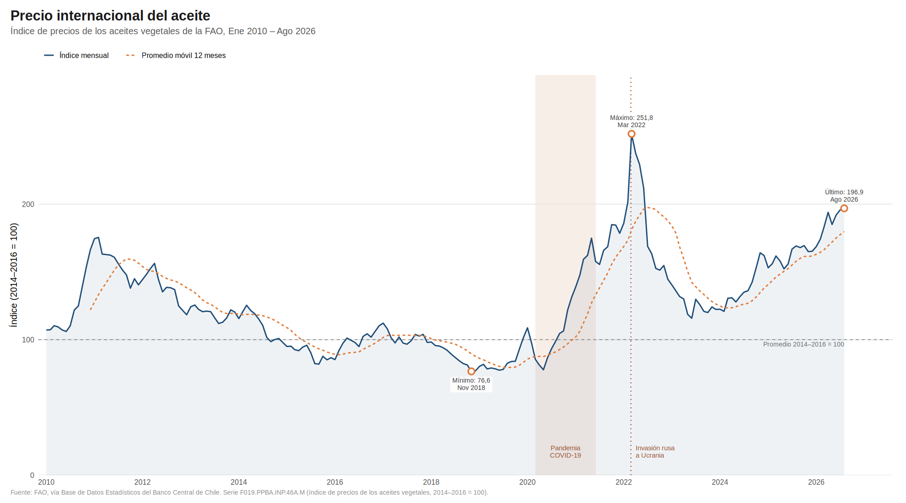

01 · R
Precio internacional del aceite (índice FAO)
Serie mensual 2010–2026 del Banco Central de Chile. El código valida la estructura del archivo antes de usarlo, mide la variación en 12 meses en porcentaje (y explica por qué no en puntos) y prueba la estacionalidad con números.
- Máximo de 251,8 en marzo de 2022, tras la invasión a Ucrania
- 29 meses seguidos de alza; +16,4% en 12 meses a agosto de 2026
- Estacionalidad débil: ±3% respecto del promedio anual
R · dplyr · ggplot2 · readxl
Ver código